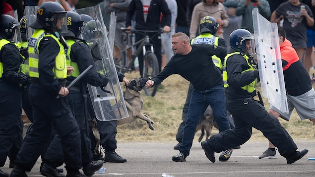

自7月29日三名女孩遇害以来，英国各地爆发了骚乱。
照片：Getty Images / Christopher Furlong
RCI
就英国暴力事件持续，加拿大政府更新对英国的”旅游警示”，称游客在英国应格外谨慎，并注意自上周以来发生的示威活动及暴力冲突。
上周一（7月29日），英国西北部绍斯波特市（Southport），一名17岁男性持刀闯入暑期儿童舞蹈班，杀死三名6至9岁的儿童。
错误信息引起大规模暴力冲突
此前疑犯被误指是穆斯林寻求政府庇护者，信息流传以后，清真寺和酒店成为被冲击目标，英国被种族主义暴力场面所笼罩，数十名警察受伤。
事实上，英国媒体称疑犯生于威尔士加的夫（Cardiff），他的家人来自卢旺达。
律师事务所成目标
虽然周二晚局势平静，但当局一直监视约三十起集会呼吁。这些呼吁是叫大众到那些为移民和政府庇护申请者提供法律援助的机构或律师事务所外集会。
英国发生了多起反移民示威活动。
照片：Reuters / Stringer
英格兰和威尔士律师协会（Law Society of England and Wales）谴责事件，司法部长马穆德（Shabana Mahmood）则谴责有关威胁，警告参与者后果严重。
英国皇家检察官文卡塔萨米（Kris Venkatasami）称，自冲突开始以来，已有400多人被捕，120多人被起诉，罪名包括煽动种族仇恨。
她举例指，一名58岁男子，就因承认在暴力事件发生的第一天在绍斯波特市（Southport）袭击急救人员而被判监三年。
伦敦警察局长罗利（Mark Rowley）警告指，没有人可以逃避法律制裁，他特别抨击那些在键盘后面传播仇恨内容的人。
示威者路边举着反移民的标语牌。
照片：afp via getty images / JUSTIN TALLIS
英国极右翼人士罗宾逊（Tommy Robinson）被指在塞浦路斯度假后在社交网络上煽动暴力，一周前冲突爆发时被群众高呼他的名字。
种族主义事件增加
在北爱尔兰的贝尔法斯特（Belfast），周二晚上发生了多起种族主义事件，警方逮捕了六名年龄在14至41岁之间的人。
据警方称，一家商店的工作人员遭年轻人以种族主义内容辱骂，一名15岁男孩遭袭击，脸部受轻伤，另外还有垃圾箱被破坏和焚烧事件。
英国首相斯塔默（Keir Starmer）。
照片：Getty Images / WPA
周二晚上曾任英格兰和威尔士皇家检察官的首相斯塔默（Keir Starmer）表示，他希望对骚乱者处以重刑。
英国政府表示，一支由6000名专业警察组成的后备军，将于本周接手。
La Presse canadienne et l’Agence France Presse, adaptation en chinois par Donna Chan.
文章来源于RCI:英国极右翼分子继续呼吁示威 加拿大更新旅游警示